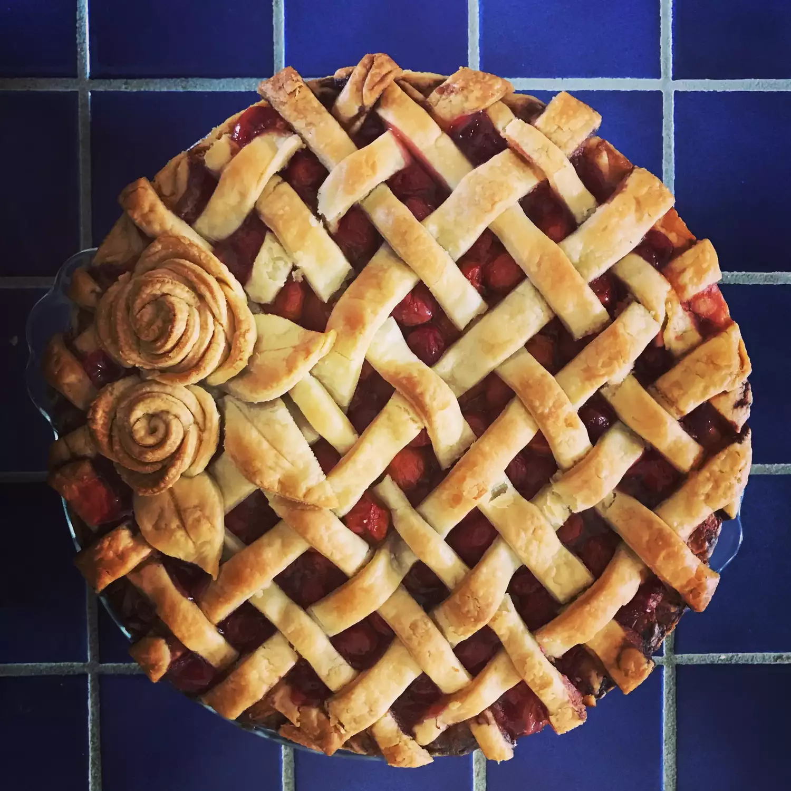

Cherry Pie

Description
A symphony of sweet and tart, this cherry pie is a masterpiece.
Bursting with juicy, ruby-red cherries nestled in a cloud-like, buttery crust, each bite is a tantalizing dance of flavors.
The golden-brown lattice top promises a flaky, tender experience, while the warm, comforting aroma fills the air with anticipation.
One taste and you'll be transported to a sun-drenched orchard, savoring the pure essence of summer.
Ingredients
- All-purpose flour
- Salt
- Cold & normal butter
- Ice water
- Pitted sour cherries
- White sugar
- Cornstarch
- Almond extract
Steps
- Combine cherries, sugar, and cornstarch. Cook until thickened. Stir in butter and almond extract. Let cool.
- Combine dry ingredients (flour and salt) in a large bowl.
- Cut in cold butter using a pastry blender, knives or fingers until pea-sized pieces form.
- Gradually add ice water, mixing until dough just comes together. Avoid over-mixing.
- Divide dough into two disks, wrap in plastic wrap, and refrigerate for at least 30 minutes.
- On a floured surface, roll out one disk to desired thickness (about 1/8 inch).
- Transfer dough to pie dish. Trim edges.
- Repeat steps 5 and 6 for the top crust (if making a double-crust pie).
- Bake at 375°F for 45-55 minutes or until golden brown and bubbly.